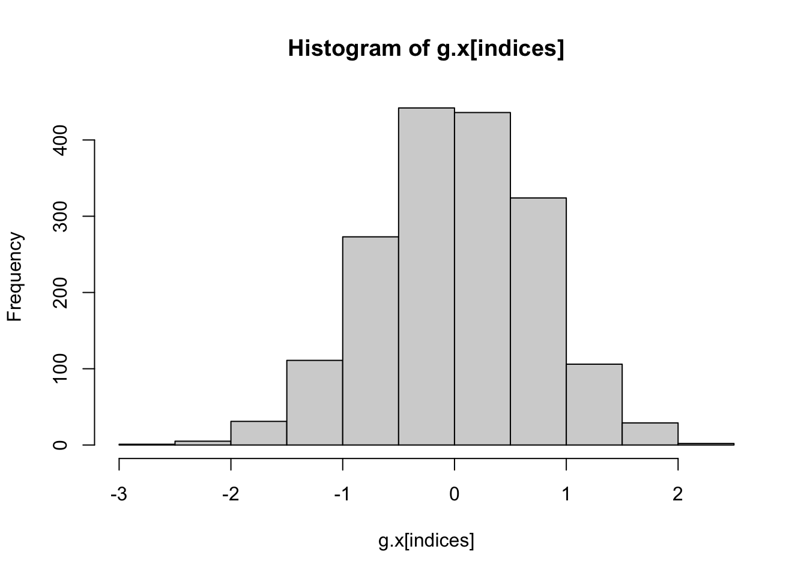
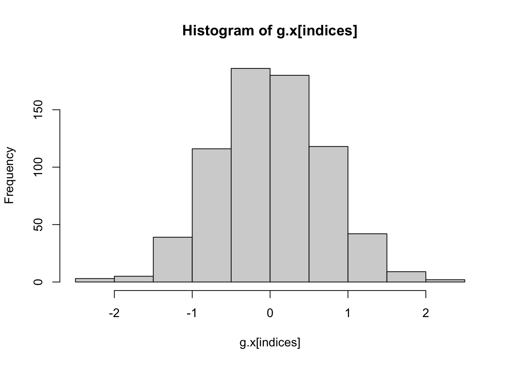

Monte Carlo simulations can estimate the posterior statistics under the normal distribution θ ~ N(0,1); Monte Carlo error decreases with the increase of sample size n (蒙特卡洛（Monte Carlo）模拟可以估计正态分布 θ∼N(0,1) 下的后验统计量；蒙特卡洛误差随着样本量 n 的增加而减小)。
a <-c(1, 2)b <-c(3, 4)rbind(a,b)
[,1] [,2]
a 1 2
b 3 4
c(rbind(a, b))
[1] 1 3 2 4
cbind(a,b)
a b
[1,] 1 3
[2,] 2 4
# Define sample sizesn_values <-c(10, 100, 1000, 10000, 100000)# Number of repetitions for each nreps <-3# Initialize storage for resultsresults <-matrix(NA, nrow =length(n_values), ncol =2* reps)# Loop over different values of nfor (i in1:length(n_values)) { n <- n_values[i]# 初始化操作--创建一个长度为 reps 的数值向量，并初始化所有元素为 0。 means <-numeric(reps) sds <-numeric(reps)# Repeat simulation for each repetitionfor (j in1:reps) { sample <-rnorm(n) # Generate n samples from N(0,1) means[j] <-mean(sample) # Compute sample mean sds[j] <-sd(sample) # Compute sample standard deviation }# Store results results[i, ] <-c(rbind(means, sds))}# Convert results into a data frameresults_df <-as.data.frame(results)colnames(results_df) <-c("Mean_1", "SD_1", "Mean_2", "SD_2", "Mean_3", "SD_3")rownames(results_df) <- n_values# Print resultsprint(results_df)
# Compute Monte Carlo errors for repetition 1# sapply() is one of the apply() series of functions that apply some function to each element of a list or vector and return the vector.mc_errors <-sapply(1:length(n_values), function(i) {sd(rnorm(n_values[i])) /sqrt(n_values[i])}) # Print Monte Carlo errorsprint(mc_errors)
\(F(x)=P(X\leq x)\), generate U~U[0,1], let X=\(F^{-1}(U)\)
Proof
Let X=\(F^{-1}(U)\)
\(P(X\leq x) = P(F^{-1}(U)\leq x)\) F is cdf–F is strictly monotonic, increasing and continuous function of x hence \(P(F^{-1}(U)\leq x)=P(F(F{-1}(U)\leq F(x))\) i.e. \(P(U\leq F(x))\). As U is a U[0,1] random variable, so that \(P(U\leq F(x))\) = F(x) since \(P(U\leq x)\) is the cdf of U~[0,1] i.e. \(P(F^{-1}(U)) \leq x)=F(x)\) —\(P(X\leq x) = F(x)\) since we have let X=\(F^{-1}(U)\).
So, each PDF could be represented as a function of U where U~[0,1].
Rejection Sampling
Uniform Generates Everything-2 (Uniform生万物)
Simulate \(\theta\) Y~U0,g\(\theta\) –accepting rule of Y
1d eg
f =function(x){return(exp(-x^2))}# numeric calculationdx=0.01x=seq(-5,5,dx)f.x=f(x)sum(f.x*dx)
[1] 1.772454
sqrt(pi)
[1] 1.772454
# Rejection Sampling to estimate f（x）= exp(-x^2)# Uniform(-5,5)g.x =runif(10000, -5, 5)peak_f <-f(0) #- standard normal# 计算均匀分布的峰值peak_g_uniform <-1/ (5- (-5))c = peak_f / peak_g_uniform # how much (the highest point of) f.x is bigger than g.xt =f(g.x) / (c *dunif(g.x, -5, 5))u =runif(10000)indices = (u < t)hist(g.x[indices])

ratio =sum(indices) /length(indices)integral.f = ratio * cintegral.f
[1] 1.76
# Normal Distributiong.x =rnorm(1000)c =2.55t =f(g.x) / (c *dnorm(g.x))u =runif(1000)indices = (u < t)hist(g.x[indices])

ratio =sum(indices) /length(indices)integral.f = ratio * cintegral.f
# moving from f1(x) to f2(x)从卡方分布转移到 F 分布f_1 =dchisq(f_x_sample, df=5)f_2 =df(f_x_sample, df1=5, df2=25)new_weights = f_2 / f_1#检查权重均值mean(new_weights) # should be ~ 1
[1] 0.9914038
mean(weights)
[1] 5.051324
# 归一化新权重new_weights_norm = new_weights /sum(new_weights)# 重采样生成 F 分布样本f2_x_sample =sample(f_x_sample, size = n, replace =TRUE, prob = new_weights_norm)# 绘制 F 分布和重采样结果的直方图par(mfrow=c(1,2))x =rf(n, 5, 25)hist(x[x<15], breaks =seq(0,15,1), main="F(5,25)")hist(f2_x_sample, breaks =seq(0,15,1), main="SIR")